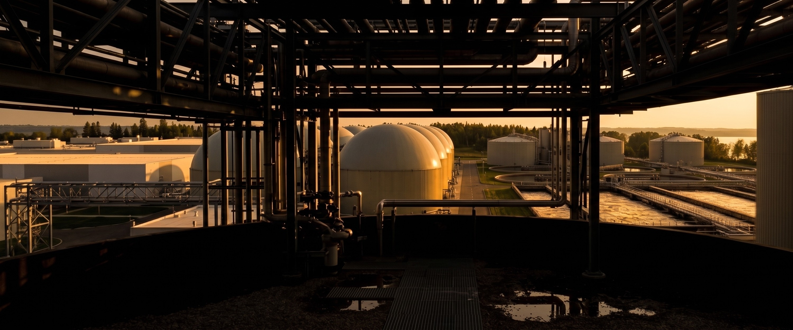
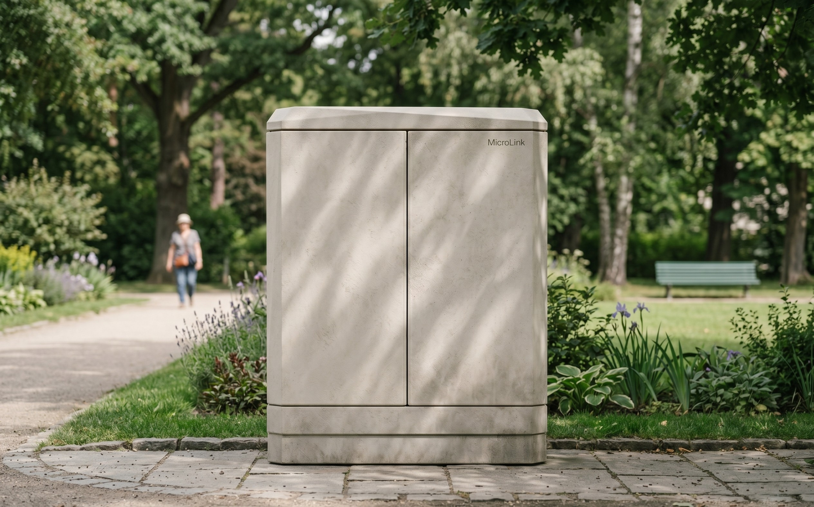
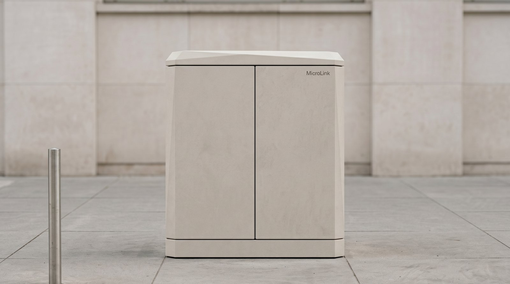
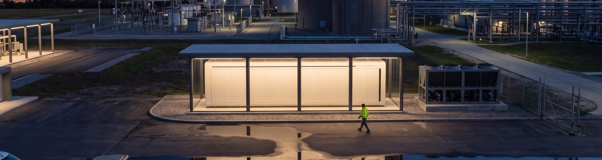
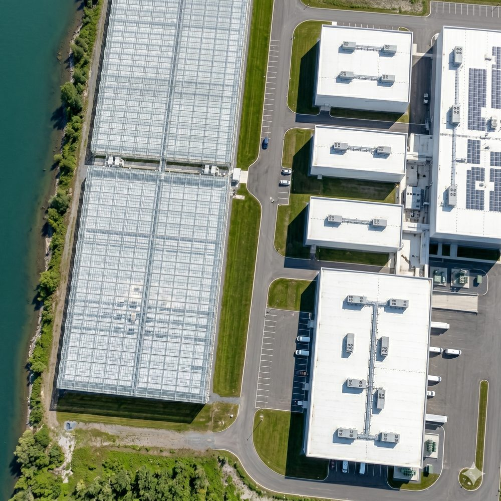
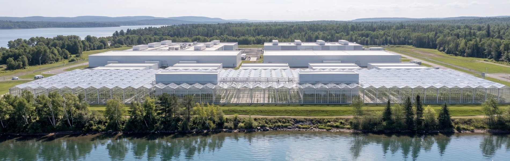
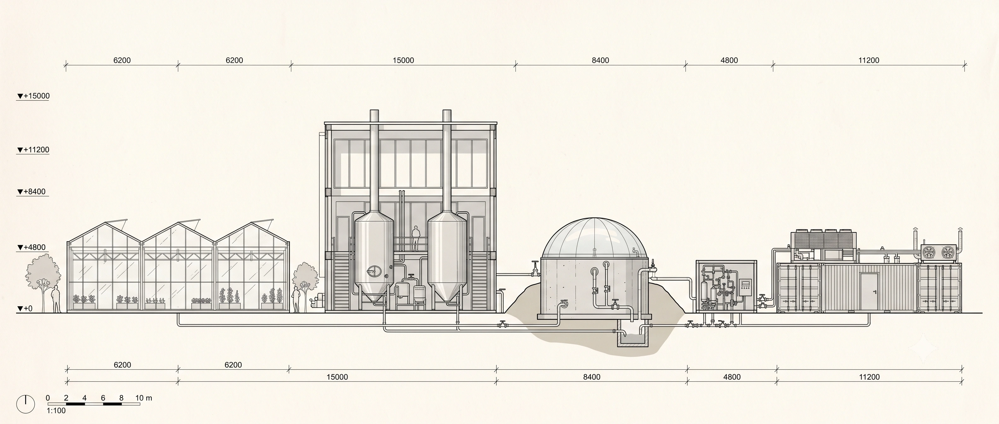

Compute that heats the world around it.
Racks are outgrowing what air can cool, and air dumps low grade heat near 35°C (95°F) that nobody wants. Liquid pulls heat straight off the silicon, and captures it at 45 to 70°C (113 to 158°F), warm enough for so many things.

MicroLink and Vertiv designed our Edge pod infrastructure together, 800 V DC capable and ready.
Chip makes heat. Liquid cooling makes that heat recoverable and high grade. Here is the product family that delivers it.




Three loops carry heat from the chip to where it is needed. The third one always has somewhere to go,
so the compute never waits and the partner is never the bottleneck.
Cold plates pull heat straight off the chip, at the density modern racks demand.
The CDU moves that heat through to the facility heat exchangers, clean and contained.
Heat goes to the partner who needs it. When demand drops, the dry cooler rejects it instead.

ERE counts the energy we give back. Below 1.0, a site returns more usable energy than it loses. The number this company exists to move.
PUE measures overhead inside the fence. On its own it can read excellent while the heat goes to waste. We report both, together.